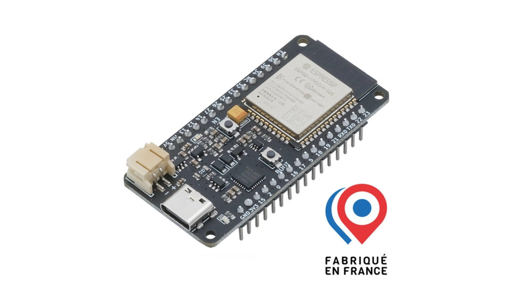
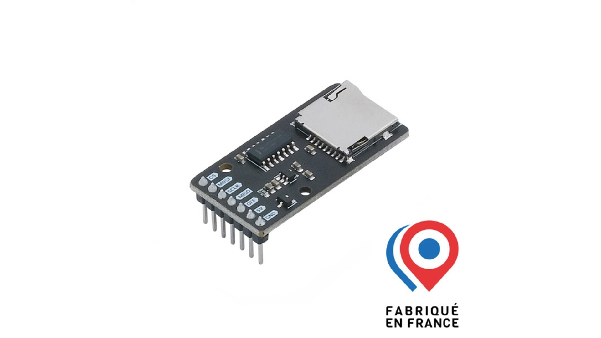
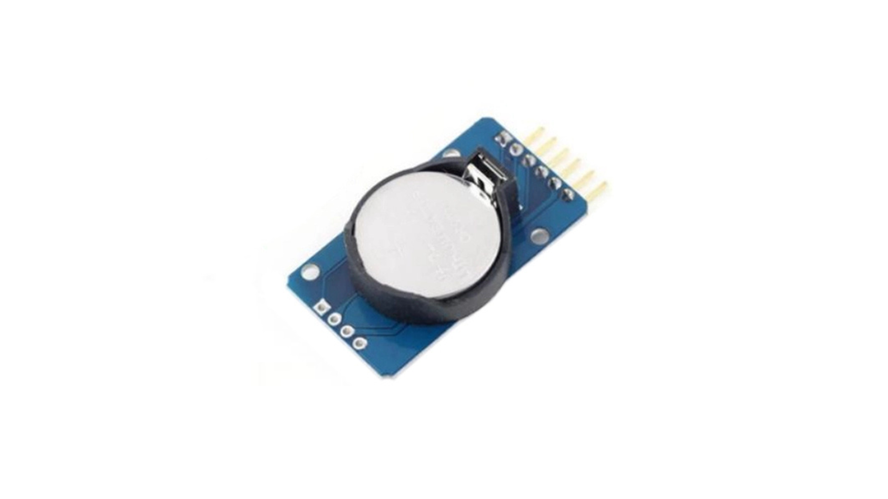
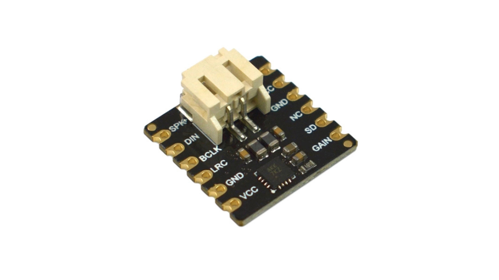
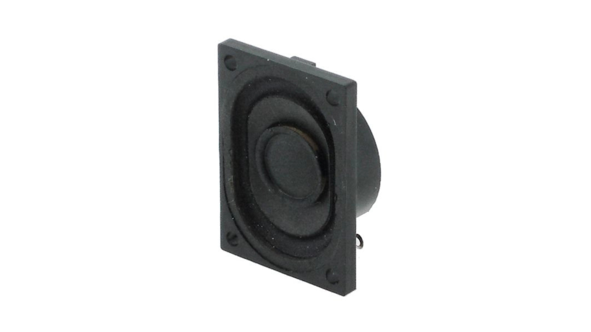
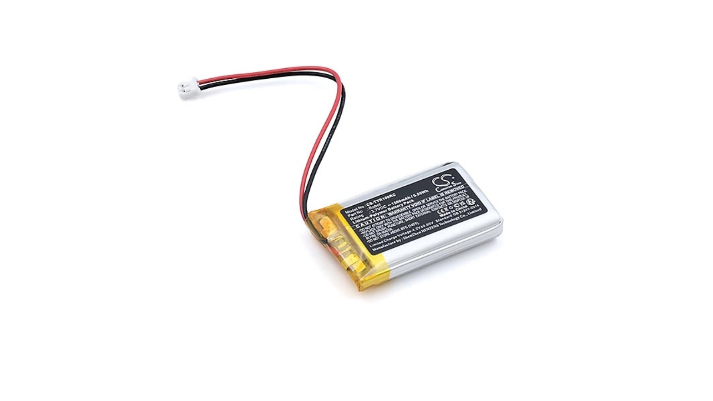
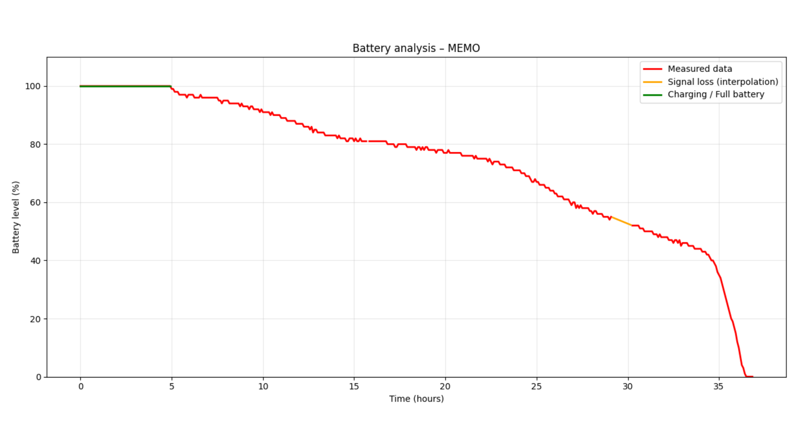

Hardware
Rôle et fonctionnement
Memo est un boîtier portable conçu pour émettre des rappels vocaux à des moments définis. Il fonctionne de manière autonome, sans connexion Internet, et exécute localement les instructions préalablement configurées via l’application mobile.
Le système repose sur une architecture embarquée intégrant plusieurs modules électroniques interconnectés, permettant la gestion du temps, le stockage des données et la restitution audio.
Composants électroniques
Schéma électronique

Vous pouvez trouver le schéma du montage ici
Carte principale ESP32
La carte Upesy ESP32 Wroom Low Power DevKit constitue le cœur du système embarqué. Basée sur un microcontrôleur ESP32-WROOM-32, elle assure l’exécution du firmware, la gestion des communications et le pilotage de l’ensemble des périphériques.

Sur le plan technique, elle offre une architecture particulièrement adaptée au projet :
- Bluetooth Low Energy
- GPIO supportant I2C, SPI, I2S, UART
- fonctionnement en logique 3.3 V (cohérent avec tous les modules) et 5V
Son intérêt principal réside dans sa capacité à gérer simultanément plusieurs bus matériels sans complexité logicielle. Cela permet une séparation claire des fonctions : I2C pour le temps, SPI pour le stockage, I2S pour l’audio.
La version Low Power intègre un mode deep sleep, exploité pour réduire drastiquement la consommation entre deux déclenchements. Ce point est déterminant pour atteindre une grande autonomie énergétique.
Lecteur de carte microSD
Le module lecteur de carte microSD Upesy assure le stockage persistant des données du système, notamment :
- fichiers audio générés (messages vocaux)
- planning des rappels (format JSON)

Il communique avec l’ESP32 via une interface SPI (MOSI, MISO, SCK, CS), choisie pour ses performances nettement supérieures à I2C sur des volumes de données importants.
Ce choix permet une lecture fluide des fichiers audio et garantit la persistance des données même après redémarrage. Il constitue un élément critique du système, car toute la logique de rappel repose sur ces données stockées.
Module RTC
Le module RTC DS3231 fournit une horloge temps réel indépendante et précise, indispensable pour le déclenchement des rappels.

Contrairement à une horloge logicielle interne à l’ESP32, ce module conserve l’heure même en cas de coupure d’alimentation. Il garantit donc un fonctionnement totalement hors ligne et fiable.
Dans le système, il est interrogé en continu par le microcontrôleur afin de comparer l’heure courante avec le planning stocké, et déclencher les rappels au moment exact.
Amplificateur audio
Le module ampli audio I2S DFR0954 assure la conversion du signal audio numérique en signal analogique exploitable.

Caractéristiques techniques :
- interface I2S (BCLK, LRCLK, DIN)
- puissance de sortie : ~1.8 W
- alimentation : 3.3 à 5 V
- DAC intégré
L’utilisation du protocole I2S est essentielle : il s’agit d’un standard dédié à l’audio numérique, permettant une transmission synchronisée et stable, sans dégradation notable du signal.
Haut-parleur miniature
Le haut-parleur HP4028 constitue la sortie finale du système.

Caractéristiques :
- impédance : 8 Ω
- format compact adapté à l’intégration
Ce choix garantit une bonne efficacité de restitution sans surcharge du module d’amplification. Le compromis retenu privilégie la compacité tout en conservant un niveau sonore suffisant pour un usage quotidien.
Batterie
La batterie Accu LiPo THYM-BAT 3.7V 1500 mAh assure l’alimentation autonome du dispositif.

Caractéristiques techniques :
- tension nominale : 3.7 V
- capacité : 1500 mAh
- connecteur : JST PH 2.0
- recharge via circuit intégré (USB-C sur la carte ESP32)
Une simulation de la courbe de décharge de la batterie LiPo a été réalisée à partir des mesures de tension récupérées par l’ESP32 :

L’analyse met en évidence une autonomie d’environ 30 heures en fonctionnement continu, ce qui répond aux besoins d’une utilisation quotidienne sans recharge intermédiaire.
Le système peut être rechargé directement via le port USB-C intégré à la carte uPesy ESP32, sans démontage ni chargeur externe.
Choix techniques
Microcontrôleur
Une solution comme une Raspberry Pi a été écartée car elle repose sur un système Linux, impliquant un temps de démarrage élevé, une consommation importante et une complexité logicielle inutile pour un système embarqué simple. À l’inverse, une BBC micro:bit est trop limitée : absence de bus I2S pour l’audio, ressources mémoire insuffisantes et faible capacité d’extension matérielle.
Le choix de l’ESP32 s’impose donc comme un compromis optimal. Il permet de gérer nativement les interfaces I2C , SPI , I2S et UART, intègre le BLE, et propose un mode deep sleep pour l’autonomie. Il offre ainsi une puissance suffisante sans complexité excessive.
Référence temporelle
Une solution basée sur un module radio DCF77 a été envisagée, mais elle dépend fortement de la qualité de réception, souvent instable en intérieur, et nécessite une écoute continue, ce qui augmente la consommation. L’utilisation de l’horloge interne de l’ESP32 a également été écartée en raison de sa dérive dans le temps et de la perte de l’heure lors d’une coupure d’alimentation.
Le choix du module RTC garantit une précision élevée, une indépendance totale du réseau et une conservation de l’heure grâce à sa pile intégrée. Il constitue une solution fiable pour un déclenchement autonome des rappels.
Stockage
L’utilisation de la mémoire interne de l’ESP32 ou d’une EEPROM a été rapidement écartée en raison de leur capacité limitée et de leur inadaptation au stockage de fichiers audio. Ces solutions ne permettent pas une gestion flexible ni durable des données.
Le recours à un lecteur de carte microSD permet un stockage massif, une compatibilité standard FAT32 et un débit suffisant via SPI pour lire des fichiers audio. Ce choix est indispensable pour garantir la persistance et l’évolutivité des données.
Chaîne audio
Des solutions basées sur PWM ou sur le DAC interne de l’ESP32 ont été envisagées, mais elles produisent une qualité sonore insuffisante, avec du bruit et une restitution peu claire, inadaptée à un usage vocal.
L’utilisation d’un amplificateur dédié comme le permet une transmission audio numérique propre, sans traitement analogique complexe. Cela garantit une restitution claire et stable, adaptée à la compréhension des messages.
Alimentation
L’utilisation de piles classiques (AA/AAA) a été écartée en raison de leur encombrement, de leur coût d’usage et de l’absence de recharge intégrée. Une batterie externe type powerbank n’est pas adaptée non plus, car elle alourdit le système et complique son intégration.
Le choix d’une batterie LiPo de 1500 mAh permet une bonne densité énergétique, un format compact et une recharge simple via USB-C. Elle répond aux contraintes de mobilité et d’autonomie du dispositif.
Synthèse
Les composants retenus ne sont pas seulement compatibles entre eux, ils sont choisis pour éviter :
- la complexité inutile (Raspberry Pi)
- les limitations matérielles (micro:bit, EEPROM)
- les dépendances externes (DCF77)
L’ensemble des composants choisi permet d’obtenir un système autonome, fiable et optimisé pour un usage réel, avec une architecture claire et maîtrisée.